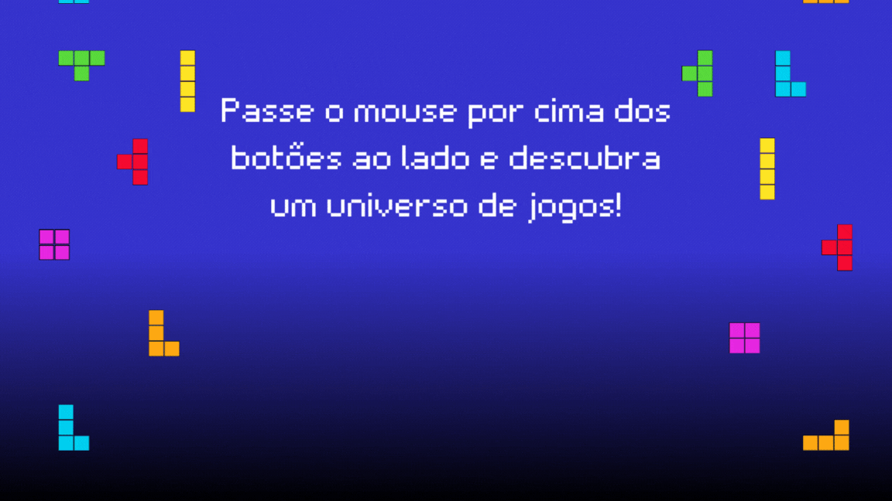

Este é o Projeto Tetrificados "anônimos", idealizado pelos estudantes do 2º Informática. Propõe uma imersão divertida no multiverso do Tetris e da programação. Aqui você encontrará a implementação de várias versões personalizadas do clássico jogo Tetris.